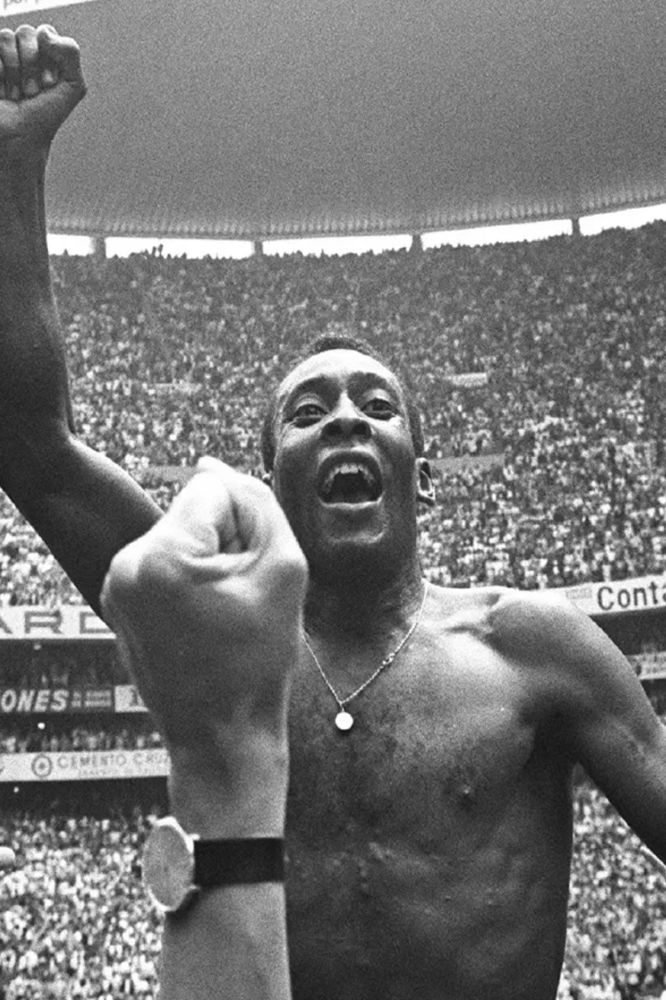
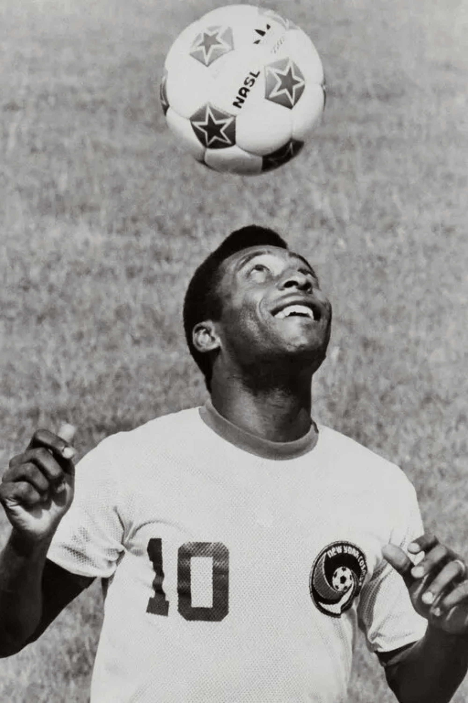

üèÖ 3√ó FIFA World Cup Winner ‚Äî 1958, 1962, 1970
⚽ Over 1,280 career goals in official matches
ü•á FIFA Player of the Century (2000)
üéñÔ∏è Santos FC‚Äôs all-time top scorer
üåç Ambassador for Football and UNICEF
üèÖ Awarded Brazil‚Äôs Gold Medal for Sports Merit
Iconic Moments
Pele lifts the World Cup trophy for Brazil — 1970.Playing for Santos FC, where he became a global icon.

Final chapter of his career with New York Cosmos, USA.The legendary No.10 in Brazil’s golden 1970 squad.Pele’s influence extended into global sports culture and media.

Pure artistry — Pele dribbling and controlling the game.